Las tareas del proyecto están disponibles en: https://tasks.hotosm.org/projects/14761. Este gestor de tareas permite organizar el trabajo colaborativo, de manera que solo una persona puede estar haciendo cambios en cierta zona en un momento dado.
Utiliza tu usuario y contraseña de OSM para iniciar sesión.
Después de iniciar sesión y estando en la presentación del proyecto, en la esquina inferior derecha hacemos clic en el botón rojo Contribuir para comenzar.
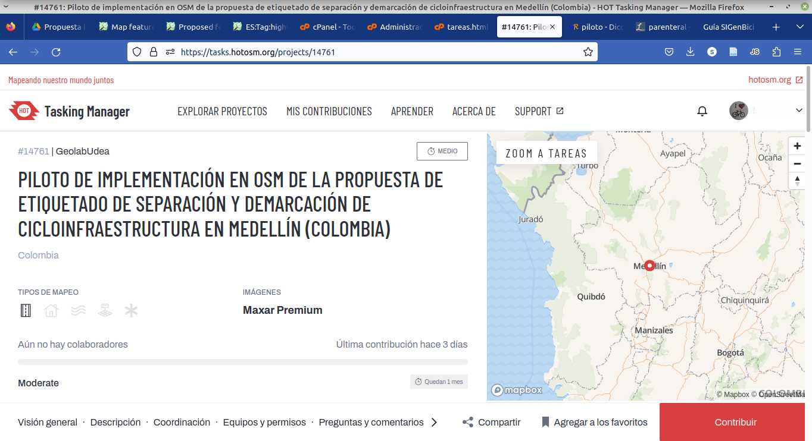
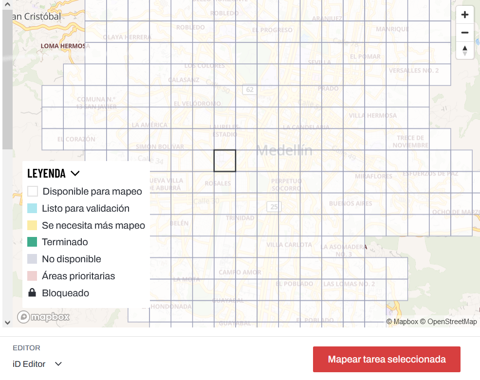
A continuación, en el mapa seleccionamos uno de los recuadros en la zona urbana de Medellín y luego hacemos clic en el botón rojo Mapear tarea seleccionada.
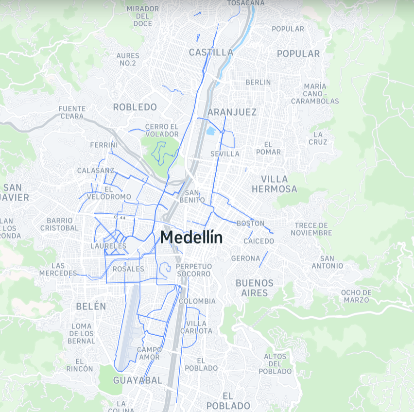
Inicialmente trabajaremos mapeando la zona de Laureles y Belén Rosales, que ya tiene fotos actualizadas en Mapillary para usar como referencia. Luego seguiremos con el resto de la zona urbana de Medellín.
Si es la primera vez que vas a editar el mapa de OSM, puedes hacer clic en Iniciar el tutorial para aprender las funciones básicas del editor iD.
Si ya sabes cómo editar, solo hay que hacer clic en Editar ahora para empezar a mapear.
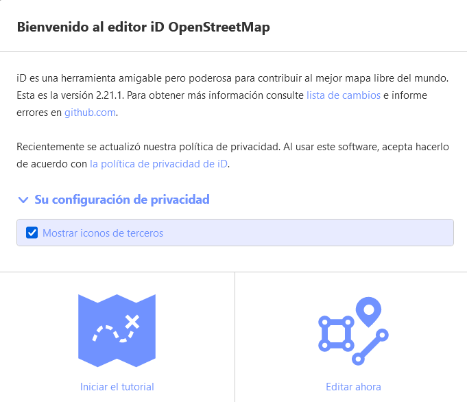
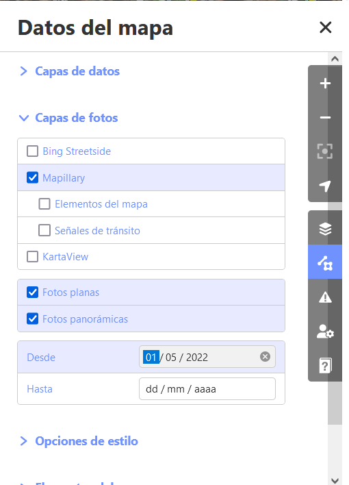
Para facilitar la edición, podemos configurar los elementos visibles en el mapa. En la barra de íconos a la derecha en el mapa, hacemos clic en el ícono Datos del mapa y desplegamos primero la sección Capas de fotos. Aquí marcamos la casilla para activar las imágenes de Mapillary.
IMPORTANTE: ¡NO UTILICES GOOGLE STREETVIEW!
El uso de Google StreetView para ayudar a mapear los datos de OpenStreetMap pondrá nuestro proyecto y el proyecto OpenStreetMap en riesgo legal,
ya que Google tiene los derechos de autor y no tenemos licencia de uso. Si no puedes determinar la información cartográfica de alguna de las fuentes autorizadas (vistas de fondo, Mapillary, etc.), en el gestor de tareas marca la tarea como inacabada y deja un comentario. Si has añadido datos a OpenStreetMap basados en GoogleStreetView, debes borrar estos datos y cartografiar desde cero utilizando otras fuentes.
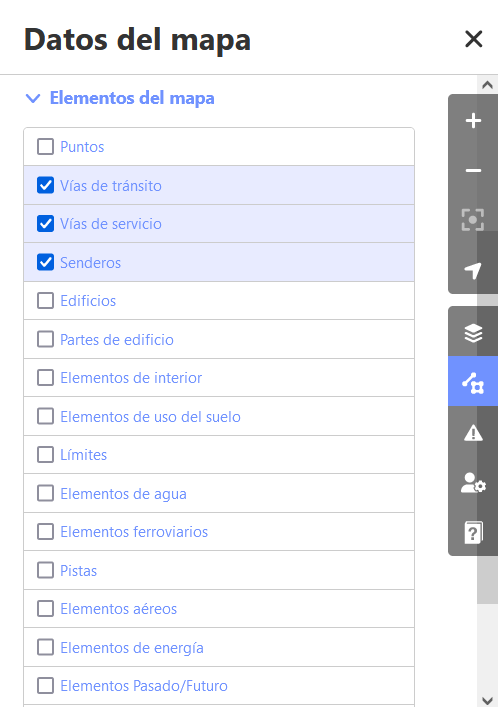
Luego, desplegamos la sección Elementos del mapa, deseleccionamos todos los elementos y marcamos para ver solamente Vías de tránsito, Vías de servicio y Senderos. Esto nos permitirá tener un mapa de fondo con menos elementos visibles para evitar confusiones y concentrarnos en la edición de vías.
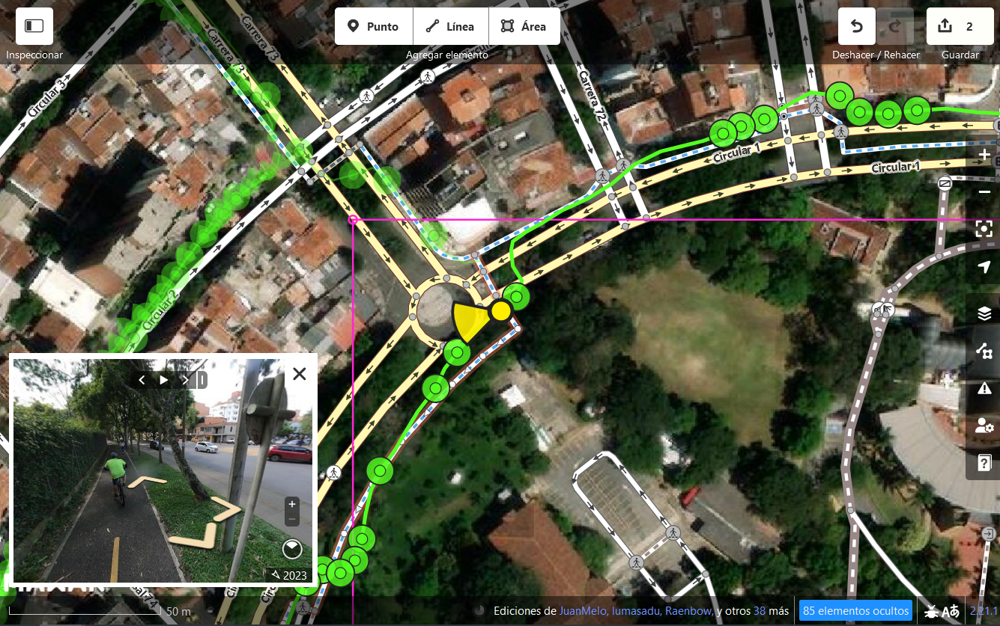
Recuerda realizar modificaciones solo dentro del recuadro magenta que aparece marcado en el editor, aunque algunas líneas (calles o ciclorrutas) pueden pasarse un poco del límite y en ese caso no hay problema.
Las líneas verdes son las trazas con imagenes de Mapillary disponibles y puedes ver las fotos como referencia al hacer clic en los puntos verdes. El punto amarillo indica la dirección en la que está la foto.
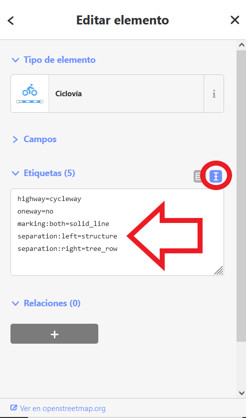
Selecciona el elemento que hayas creado o que vas a revisar o modificar y en la parte inferior del panel izquierdo, en la sección correspondiente a las etiquetas, selecciona el modo texto para realizar las modificaciones necesarias según el tipo de cicloinfraestructura.
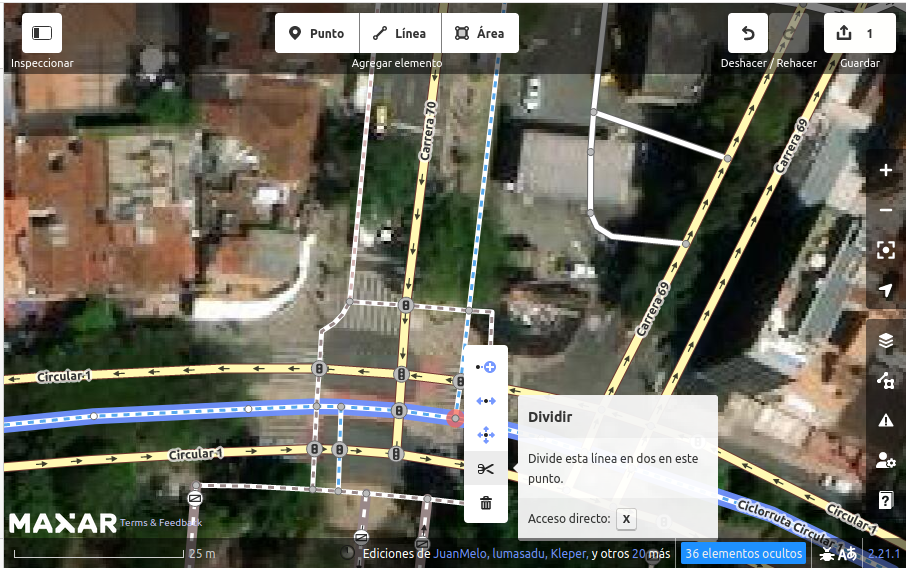
En algunos casos, es posible que sea necesario dividir la línea de la ciclorruta cuando las separaciones son distintas en varios tramos. Para esto, hacemos clic derecho sobre el punto donde queremos hacer la división y seleccionamos Dividir (el ícono de las tijeras). Ahora podremos etiquetar cada tramo independiente según la separación y demarcación que tenga.
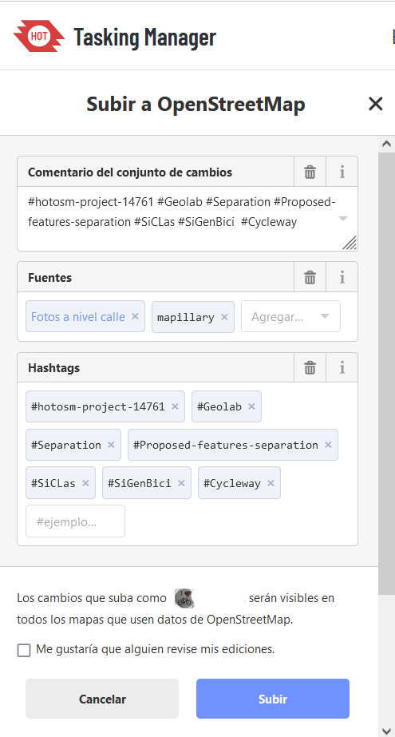
Es recomendable guardar las contribuciones al mapa regularmente y es un requisito guardar todos los cambios antes de poder enviar la tarea completada para su validación. Para ello, utilizamos el ícono GUARDAR que aparece en la esquina superior derecha del mapa. Una vez hacemos clic en el ícono, se cargará un panel de verificación en la parte izquierda de la pantalla con una lista de los cambios que hemos realizado en el área. Introducimos un comentario sobre las modificaciones y hacemos clic en el botón SUBIR. Es importante conservar los hashtags del proyecto que se han rellenado previamente en el campo Comentario, ya que esta es la manera en que podemos hacer un seguimiento a las contribuciones a nuestra iniciativa en OSM.
Nota especial sobre el borrado:
En general, debes evitar borrar el trabajo de otras personas si solo necesita mejoras. Puedes borrar tus propios errores, pero deberías intentar ajustar los objetos mapeados de otras personas si necesitan cambios. Esto preserva la historia de los elementos en la base de datos OSM y es respetuoso con las demás personas que mapean. Si realmente crees que algo debe ser eliminado, considera preguntar primero al mapeador original o en una de las listas de correo electrónico de OSM.
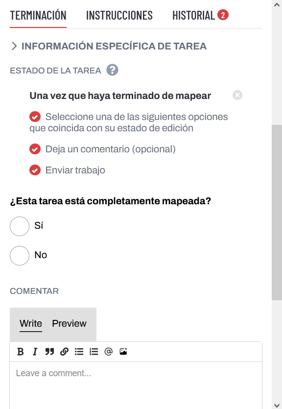
Después de subir los cambios realizados a OSM, en el panel lateral derecho seleccionamos las opciones de terminación de la tarea.
Si todavía no has terminado todo el recuadro puedes indicar aquí que la tarea aún no está totalmente mapeada; si ya terminaste de mapear toda la cicloinfraestructura en el recuadro, indicamos que la tarea sí está totalmente mapeada.
De ser necesario, aquí también puedes agregar un comentario a la tarea.
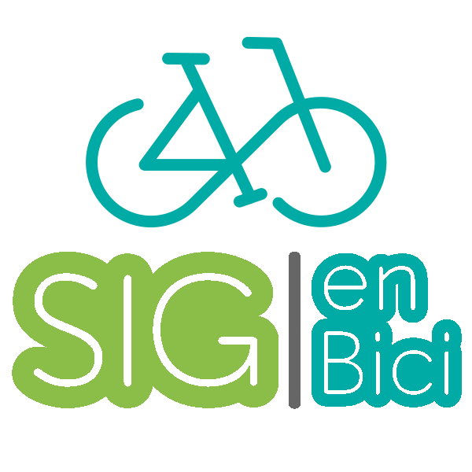
Para terminar enviamos la tarea.
¡Muchas gracias por contribuir a este proyecto de mapeo colaborativo, de ciclistas para ciclistas!